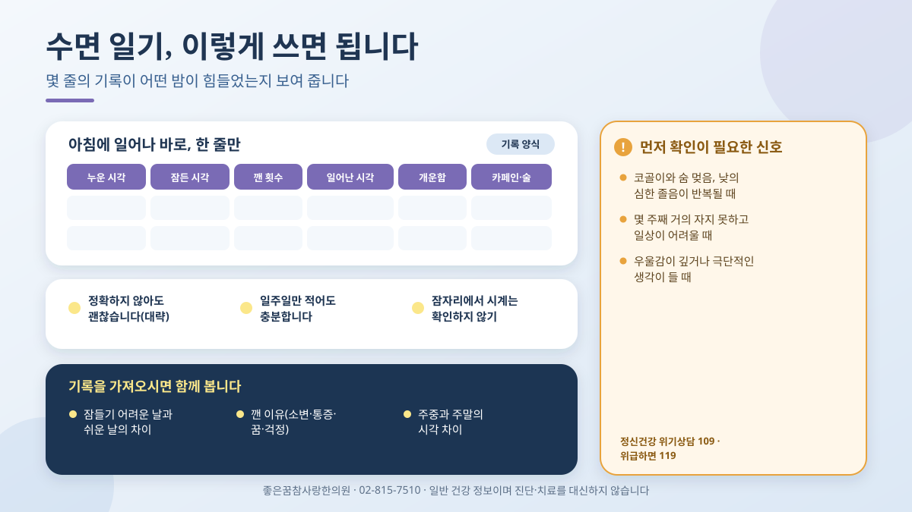

일주일 동안 누운 시각, 잠들기까지 걸린 시간, 깬 횟수와 시각, 일어난 시각, 아침의 개운함, 낮의 졸음과 카페인을 한 줄씩 적어 오시면 불면의 모양을 구분하고 다음 진료에서 변화를 이어서 확인하는 데 큰 도움이 됩니다.
여쭙는 것
- 잠들기 어려운 날과 쉬운 날은 무엇이 달랐나요?
- 깬 날에는 무엇 때문에 깼나요? (소변, 통증, 꿈, 걱정)
- 주중과 주말의 시각 차이는 얼마나 되나요?
생활에서 해 볼 것
- 일기를 쓰는 일주일 동안은 일어나는 시각을 되도록 일정하게 지키기
- 기록을 보며 카페인을 마신 마지막 시각을 오후 이른 시간으로 당겨 보기
- 잠자리에서 시계를 확인하지 말고, 아침에 대략 적기
한의원에서 함께 살필 것
- 일기를 보니 새벽에 깨는 날이 대부분인 경우, 깬 이유와 몸의 신호를 함께 살핍니다.
- 잠든 시각이 날마다 크게 달라지는 경우, 하루 생활 리듬을 함께 정리합니다.
- 잠은 길지만 아침이 무거운 경우, 잠의 질과 소화, 긴장을 함께 살핍니다.
먼저 확인이 필요한 신호
- 일기에 코골이와 숨 멎음, 낮의 심한 졸음이 반복해서 보이는 경우
- 몇 주째 거의 자지 못하고 일상이 어려운 경우
- 우울감이 깊거나 극단적인 생각이 드는 경우(정신건강 위기상담 전화 109 · 위급하…

수면 일기는 어렵지 않습니다. 정확하지 않아도 괜찮고, 일주일만 적어도 충분합니다. 기억에만 기대면 "요즘 계속 못 잤어요"로 뭉뚱그려지기 쉬운데, 몇 줄의 기록이 있으면 어떤 밤이 힘들었는지 구체적으로 이야기할 수 있습니다.
왜 수면 일기를 쓰면 좋을까요
잠의 불편은 모양이 여러 가지라, 무엇이 흔들리는지부터 나눠 봐야 합니다.
- 잠들기까지 오래 걸리는 경우: 저녁의 긴장, 늦은 화면과 카페인이 겹치는 일이 많습니다.
- 중간에 자주 깨는 경우: 밤 소변, 통증, 더위나 추위, 코골이가 원인일 수 있습니다.
- 새벽에 일찍 깨는 경우: 수면 후반의 얕아진 잠, 술, 걱정이 관련될 수 있습니다.
- 자도 개운하지 않은 경우: 잠의 깊이와 낮 생활이 함께 영향을 줍니다.
일기는 이 가운데 어느 쪽인지 가려내는 가장 쉬운 방법입니다.

자주 하는 오해
- 분 단위로 정확히 적어야 의미가 있다고 여기기 쉽지만, 대략의 시각이면 충분합니다. 정확히 적으려고 밤에 시계를 보면 오히려 잠이 깨기 쉽습니다.
- 잠을 못 잔 날만 적으면 된다고 생각하기 쉽지만, 잘 잔 날의 기록이 있어야 무엇이 달랐는지 비교할 수 있습니다.
- 스마트워치 숫자가 곧 잠의 질이라고 여기기 쉽지만, 기기 추정치에는 한계가 있어 아침에 느낀 개운함을 함께 적는 편이 좋습니다.
- 일기를 쓰면 바로 잠이 달라져야 한다고 생각하기 쉽지만, 일기는 잠의 모양을 보기 위한 기록이지 그 자체가 치료는 아닙니다.
예를 들면 이런 경우입니다
- 예를 들어 야근이 잦은 직장인이라면, 퇴근 시각과 저녁 식사 시각을 한 칸 더 적어 두면 늦게 먹은 날 잠이 어떻게 달라지는지 보기 쉽습니다.
- 예를 들어 새벽에 일찍 깨는 어르신이라면, 낮잠 시각과 길이, 저녁에 누운 시각을 함께 적어 두면 밤잠이 짧아지는 흐름을 함께 살필 수 있습니다.
- 예를 들어 아이 때문에 밤에 여러 번 깨는 육아 중인 분이라면, 아이 때문에 깬 것과 혼자 깬 것을 구분해 표시해 두면 내 잠의 모양을 따로 볼 수 있습니다.

이렇게 기록해 오시면 상담이 쉬워집니다
- 누운 시각과 잠들었다고 느낀 시각
- 밤에 깬 횟수와 깬 시각, 다시 잠들기까지 걸린 시간
- 일어난 시각과 아침의 개운함(좋음·보통·안 좋음)
- 낮의 졸음과 낮잠(몇 시에 얼마나)
- 카페인과 술, 저녁 식사 시각, 먹은 약(수면제 포함)
이렇게 쓰시면 편합니다
- 아침에 일어나 바로, 간단히 한 줄만
- 정확한 시계 확인은 하지 않아도 됩니다(대략이면 충분)
- 잠이 달라진 날은 그날 있었던 일을 한 줄 더하기
- 종이, 휴대폰 메모, 앱 등 편한 방법이면 무엇이든 괜찮습니다.
한 줄은 이런 식이면 됩니다. "누움 23:30 / 잠듦 00:30쯤 / 깸 1번(4시, 소변) / 기상 6:40 / 개운함 보통 / 커피 2잔(마지막 오후 3시) / 저녁 8시".

스스로 점검해 보세요
일주일 일기를 다 쓴 뒤 아래를 살펴보세요.
- 잠들기까지 30분 넘게 걸린 날이 사흘 이상이었다
- 밤에 깬 뒤 다시 잠들기까지 30분 넘게 걸린 날이 있었다
- 주중과 주말의 일어난 시각이 2시간 넘게 차이 났다
- 오후 늦게 카페인을 마신 날 잠들기가 더 어려웠다
- 술을 마신 날 새벽에 깼다
- 낮잠을 30분 넘게 잔 날 밤잠이 늦어졌다
- 잠은 길었는데 아침이 무거운 날이 많았다
해당하는 항목에 표시해 오시면 무엇부터 바꿔 볼지 함께 정하기 쉽습니다.
먼저 이렇게 여쭙니다
일기를 가져오시면 진료에서 이렇게 함께 봅니다.
- 잠들기 어려운 날과 쉬운 날은 무엇이 달랐나요?
- 깬 날에는 무엇 때문에 깼나요? (소변, 통증, 꿈, 걱정)
- 주중과 주말의 시각 차이는 얼마나 되나요?
- 낮의 졸음이 심한 날은 언제였나요?
일상에서 먼저 해 볼 수 있는 것
- 일기를 쓰는 일주일 동안은 일어나는 시각을 되도록 일정하게 지키기
- 기록을 보며 카페인을 마신 마지막 시각을 오후 이른 시간으로 당겨 보기
- 잠자리에서 시계를 확인하지 말고, 아침에 대략 적기
- 일기 때문에 잠을 더 신경 쓰게 된다면 하루 이틀 쉬어 가기
한의원에서 함께 살필 수 있는 경우
- 일기를 보니 새벽에 깨는 날이 대부분인 경우, 깬 이유와 몸의 신호를 함께 살핍니다.
- 잠든 시각이 날마다 크게 달라지는 경우, 하루 생활 리듬을 함께 정리합니다.
- 잠은 길지만 아침이 무거운 경우, 잠의 질과 소화, 긴장을 함께 살핍니다.
좋은꿈참사랑한의원에서는 가져오신 기록을 함께 보며 불면의 모양을 먼저 구분하고, 진맥을 기본으로 하고 필요하다고 판단될 때 설진·복진을 더해 몸 상태를 살펴 침이나 한약 상담 등 맞는 방법을 정합니다. 다음 진료에서는 같은 기록으로 달라진 점을 이어서 확인합니다.
첫 방문에는 일기를 함께 펼쳐 놓고 먼저 이야기를 듣습니다. 가장 힘들었던 밤과 비교적 편했던 밤이 무엇이 달랐는지 여쭌 뒤 진맥을 짚고 혀와 배를 살펴 몸의 긴장과 소화 상태를 확인합니다. 필요하다고 판단되면 원내 장비로 몸 상태를 함께 보고, 일기의 흐름과 진찰 내용을 맞춰 지금 잠을 흔드는 쪽이 생활 리듬인지, 몸의 신호인지, 긴장인지 설명드린 뒤 치료 방향과 다음 주에 바꿔 볼 한 가지를 함께 정합니다.

얼마나 적고, 언제 상담하면 좋을까요
- 처음에는 일주일, 생활을 하나 바꿔 본 뒤에는 다시 1~2주를 적어 비교해 보세요.
- 일기에서 잠들기 어렵거나 자주 깨는 밤이 일주일에 세 번 이상이고 이런 흐름이 3~4주 넘게 이어진다면 진료를 받아 보시길 권합니다.
- 숨이 멎는 것 같다는 말을 들었거나 운전 중에도 졸음을 참기 어렵다면 일기를 더 쓰기보다 먼저 병원 진료를 받으세요.
이런 증상은 먼저 확인이 필요합니다
- 일기에 코골이와 숨 멎음, 낮의 심한 졸음이 반복해서 보이는 경우
- 몇 주째 거의 자지 못하고 일상이 어려운 경우
- 우울감이 깊거나 극단적인 생각이 드는 경우(정신건강 위기상담 전화 109 · 위급하면 119)
수면제를 먹고 있다면 처방한 의사와 상의 없이 줄이거나 끊지 않습니다.

함께 읽으면 좋은 글
- "잠이 안 와요"라는 말을 세 가지로 나눠 설명하는 법은 무엇인가요?
- 밤에 자꾸 시계를 보게 될 때는 어떻게 하나요?
- 가족이 녹음한 코골이 소리를 진료에 가져가면 무엇을 보나요?
한눈에 보는 표
| 구분 | 핵심 |
|---|---|
| 여쭙는 것 | 잠들기 어려운 날과 쉬운 날은 무엇이 달랐나요? 깬 날에는 무엇 때문에 깼나요? (소변, 통증, 꿈, 걱정) |
| 생활에서 해 볼 것 | 일기를 쓰는 일주일 동안은 일어나는 시각을 되도록 일정하게 지키기 기록을 보며 카페인을 마신 마지막 시각을 오후 이른 시간으로 당겨 보기 |
| 한의원에서 함께 살필 것 | 일기를 보니 새벽에 깨는 날이 대부분인 경우, 깬 이유와 몸의 신호를 함께 살핍니다. 잠든 시각이 날마다 크게 달라지는 경우, 하루 생활 리듬을 함께 정리합니다. |
| 먼저 확인이 필요한 신호 | 일기에 코골이와 숨 멎음, 낮의 심한 졸음이 반복해서 보이는 경우 몇 주째 거의 자지 못하고 일상이 어려운 경우 |
자주 묻는 질문
일기를 꼭 써야 하나요?
아니요. 말씀으로만 하셔도 됩니다. 일기는 이야기를 정리하고 변화를 비교하는 데 도움이 됩니다.
앱이나 스마트워치 기록을 가져가도 되나요?
네, 편한 방법이면 됩니다. 다만 기기 숫자보다 아침에 느낀 개운함을 함께 적어 오시면 더 도움이 됩니다.
기록이 부담스러워요.
일주일만, 하루 한 줄씩만 적어도 충분합니다. 부담이 되면 쉬어 가셔도 괜찮습니다.
이 글은 일반적인 건강 정보이며 개인의 진단이나 치료를 대신하지 않습니다. 증상이 있거나 복용 중인 약이 있다면 진료를 통해 확인하세요. 치료 효과는 개인마다 다를 수 있습니다.
작성 기준: 일반적으로 알려져 있는 건강 정보를 참고해 정리했습니다(대표원장 감수). 증상 기록은 1~2주 동안 하루 1회, 비슷한 시간에 적어 오시면 지난 상태와 비교하기 쉽습니다.
좋은꿈참사랑한의원은 재진 때 지난번 이야기부터 이어서 여쭙니다. 진료시간과 예약은 오시는 길에서 확인하세요.